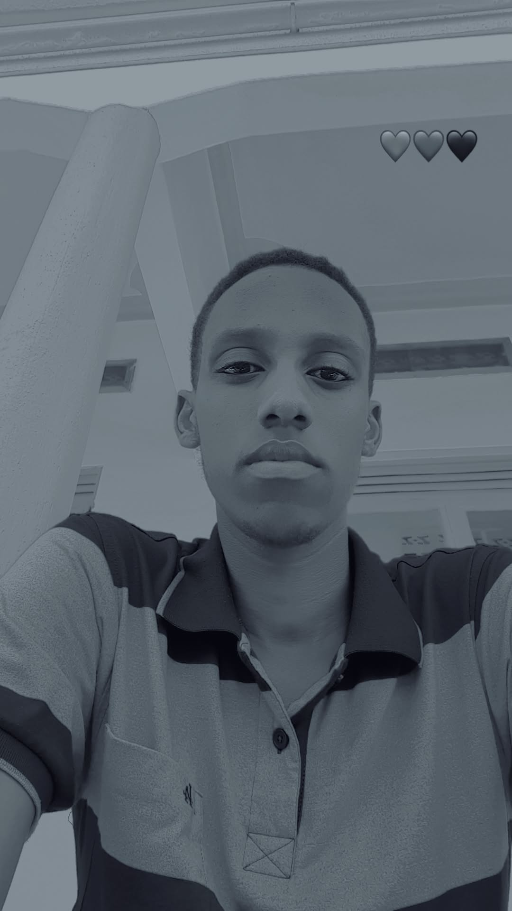
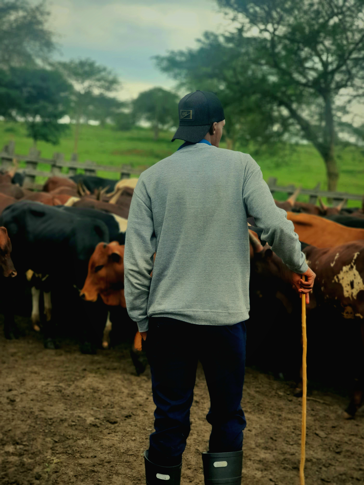

Creative vision
A reflection of the ideas and energy I bring to technology, design, and learning.
A glimpse of my journey, creativity, and the moments that inspire my work as a software engineering student.
A reflection of the ideas and energy I bring to technology, design, and learning.

Moments captured along the way that remind me of my journey and ambition.
Each moment motivates me to continue building meaningful solutions and learning more.
A motivational video to inspire growth and perseverance.

Apart from technologhy, I also like animals and being around livestock and green nature.
Inspired by the goal of becoming a skilled software engineer and problem solver.